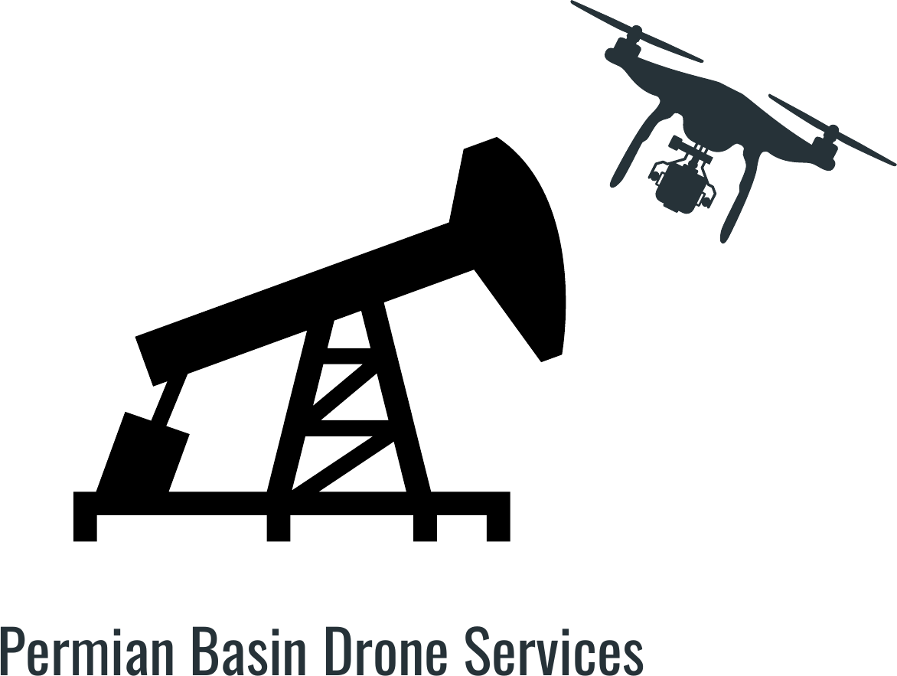
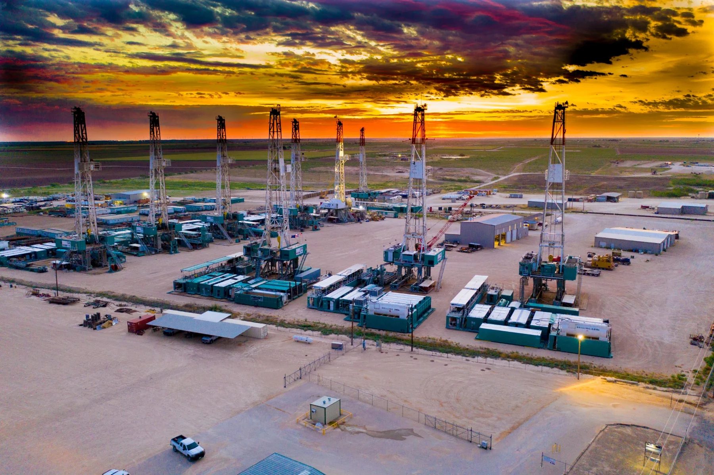
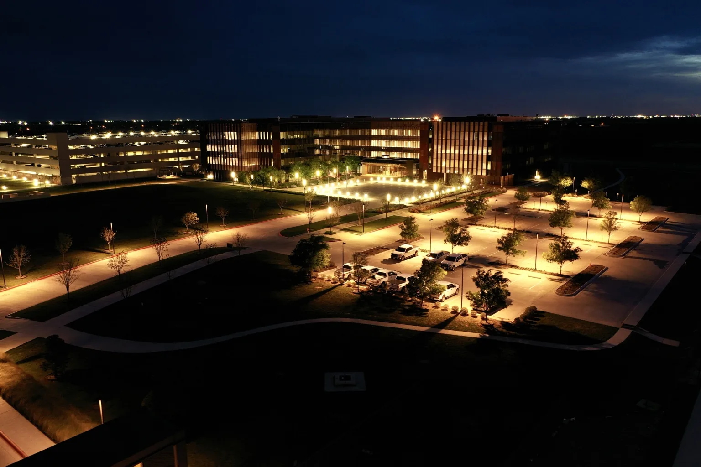

Commercial Real Estate
Exterior aerials, site context, corporate campuses, offices, retail, hospitality and marketing-ready property imagery.

Permian Basin Drone ServicesMidland · Odessa · West Texas · Eastern New Mexico
Professional aerial photography and cinematic drone video for commercial real estate, construction, energy, marketing and specialty projects.
From polished marketing imagery to repeatable project documentation, Permian Basin Drone Services helps clients show scale, context, and progress with a perspective that ground photography cannot match.
Exterior aerials, site context, corporate campuses, offices, retail, hospitality and marketing-ready property imagery.
Facility overviews, infrastructure imagery, site documentation and aerial visuals for industrial and energy operations.
Consistent aerial perspectives for progress updates, stakeholder communication, milestone documentation and project marketing.
Smooth, engaging aerial motion for websites, social media, destination marketing, brand films and specialty projects.

Energy & Infrastructure
Clear aerial perspectives for facilities, infrastructure and operations across the Permian Basin.
Discuss an industrial project ↗Selected work
Cinematic flyovers
Three examples from the cinematic portfolio. Tap play to view with sound.

About Permian Basin Drone Services
Based in Midland, Texas, Permian Basin Drone Services provides professional aerial photography and video for clients across West Texas and beyond. Projects range from commercial real estate and marketing to construction documentation, energy facilities and cinematic specialty work.
The goal is simple: deliver strong visuals, dependable communication and a perspective that helps your project stand out.
Start a project
Send the basics and we’ll follow up about location, timing, deliverables and project requirements.